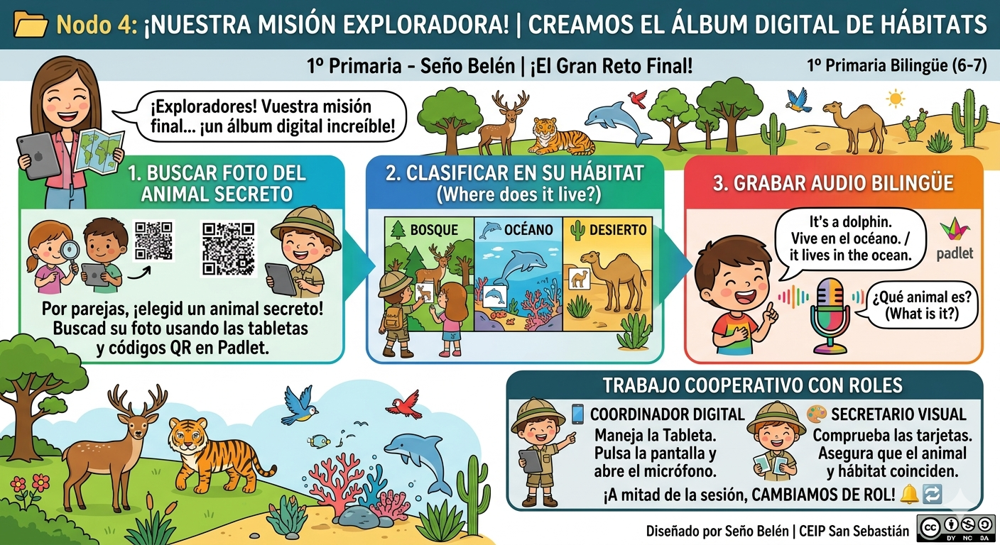

Texto

CREAMOS NUESTRO ALBÚM
Título del hilo: Herramienta interactiva para mis Pequeños Exploradores: El muro visual y sonoro en 1º de EP 🗺️🔊
¡Hola a todos y a todas!
Comparto con vosotros la propuesta metodológica y tecnológica que servirá como canal para que mis alumnos y alumnas de 1º de Educación Primaria elaboren su producto final dentro de nuestra SdA Bilingüe "¡Pequeños exploradores de la naturaleza!".
Herramienta digital seleccionada: Padlet (configurado en modo "Muro" o "Lienzo" colaborativo).
Producto final del alumnado: Creación de un "Álbum Digital de los Hábitats" cooperativo por parejas.
Objetivo de la herramienta: Centralizar en un único espacio interactivo las producciones multimedia del alumnado (clasificaciones, dibujos digitalizados de seres vivos, textos breves y audiodescripciones en inglés y castellano) para compartir los descubrimientos sobre el bosque, el océano y el desierto con el resto de la comunidad escolar.
🎯 Justificación Pedagógica y Adaptación al Contexto (Enfoque B2)
«La elección de Padlet no ha sido casual, sino el resultado de una profunda reflexión sobre las características madurativas de los niños y niñas de 6 años (1º de EP), que se encuentran en pleno proceso de adquisición de la lectoescritura, y la necesidad de subsanar la brecha digital y la gestión del tiempo que analicé en el Ciclo de Gibbs de la Tarea 1.1.
Versatilidad y adecuación a la edad (6 años): Padlet ofrece una interfaz extremadamente intuitiva basada en el sistema de "arrastrar y soltar" o pulsar botones iconográficos muy sencillos (el símbolo +). Esto permite que los alumnos de primero de primaria puedan subir contenido de manera autónoma sin perderse en menús de navegación complejos que generen frustración.
Contexto y disponibilidad en el centro: En el CEIP San Sebastián contamos con un carro de tabletas digitales corporativas con una conectividad Wi-Fi estable. Al ser Padlet una herramienta basada en la nube que no requiere instalación de software pesado ni registros individuales para el alumnado (acceden de forma segura a través de un único enlace compartido o código QR gigante en la mesa), la preparación de la sesión es invisible para el ritmo del aula, maximizando el tiempo de aprendizaje real de Science.
Fomento de los roles cooperativos: Vinculándolo con las decisiones tomadas en mi Tarea 2.1, las parejas trabajarán con roles definidos. El Coordinador Digital se encargará de pulsar la interfaz y el Secretario Visual de validar la tarjeta de pictogramas analógica. La versatilidad de Padlet permite que ambos interactúen de forma integrada.
♿ Opciones de Accesibilidad y Pautas DUA (Criterio Fundamental de la Lista de Cotejo)
La fuerza de esta elección radica en su capacidad para ofrecer un entorno de enseñanza verdaderamente inclusivo y adaptado a la diversidad (Acondicionamiento de tecnologías digitales):
Múltiples formas de expresión (Audio y Grabación de voz): Padlet cuenta con una grabadora de audio nativa dentro de la propia herramienta. Aquellos alumnos que presenten dificultades en la lectoescritura inicial o que requieran un andamiaje lingüístico en el área bilingüe pueden pulsar el icono del micrófono y grabar sus descripciones oralmente en inglés o castellano ("This is a dolphin and lives in the ocean"). Esto garantiza que la evaluación valore su competencia científica y lingüística oral, eliminando la barrera de la escritura mecánica.
Accesibilidad visual y andamiaje: Permite asociar texto, imágenes en alta resolución, pictogramas y audio en una misma tarjeta. Además, es totalmente compatible con los lectores de pantalla nativos de las tabletas del centro y el zoom del navegador, facilitando que cualquier alumno con necesidades específicas de apoyo educativo (NEAE) participe en igualdad de condiciones en la construcción del muro colectivo.